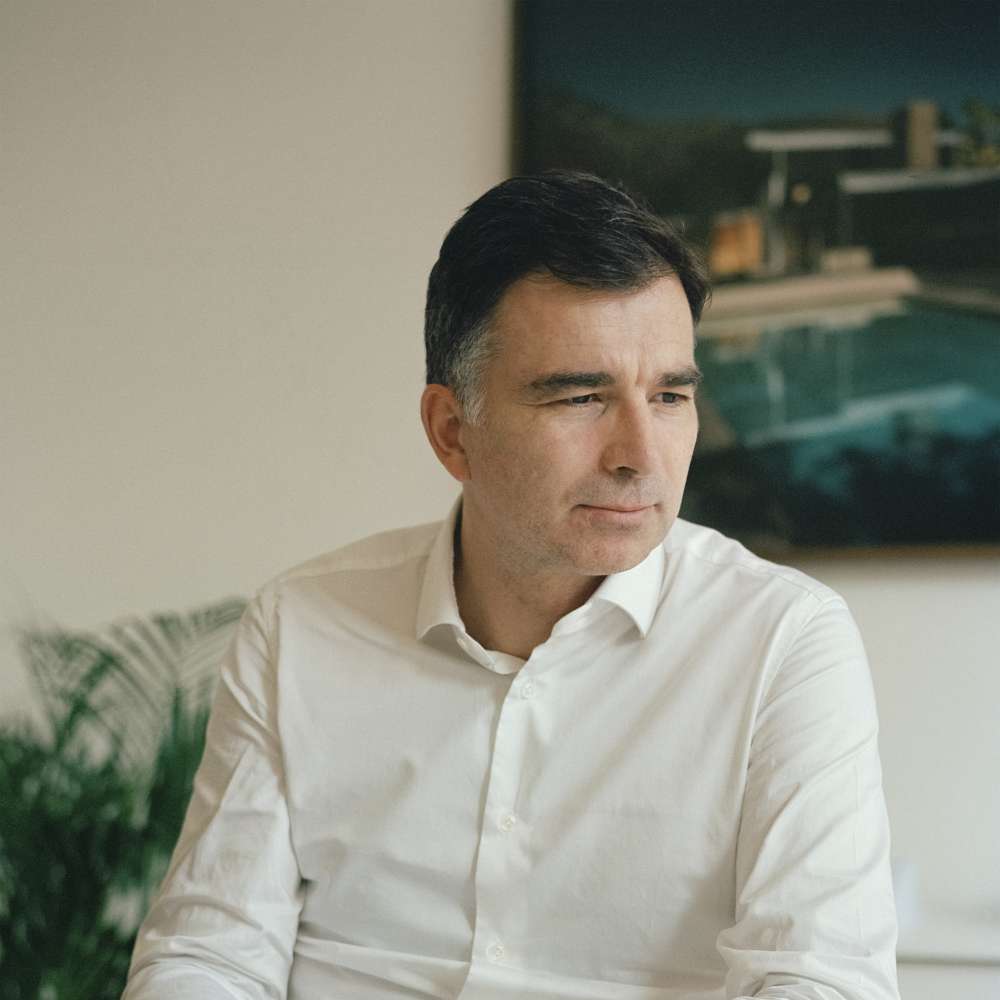
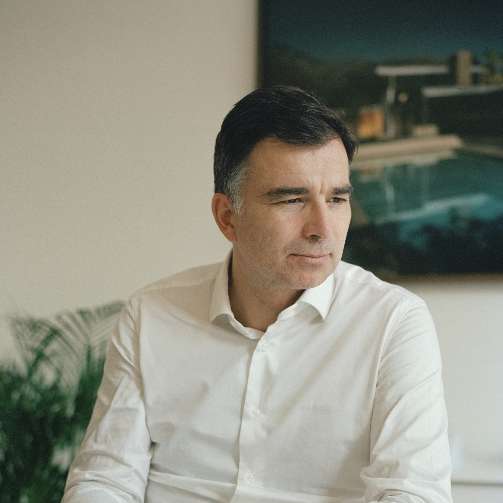

Juin 2021
Wim Straetmans
CEO de Kairos, administrateur de BAM Belgium et de BAM Interbuild
Adresses
 

Octobre 2021
Peux-tu me décrire ta fonction actuelle et en quoi elle consiste ?
Le bureau prend de l’expansion depuis ces dix dernières années et ma fonction évolue, dans le sens où elle mûrit. J’ai aujourd’hui plus de recul.
Je supervise toujours l’atelier, que ce soit au niveau de la conception, avec Laurent Liefooghe, ou au niveau de l’exécution pour laquelle je peux m’appuyer sur des collaborateurs très expérimentés.
Mon rôle consiste également à participer à la vision de l’agence par un rôle proactif au conseil d’administration et au Comex.
Peux-tu me décrire l’organigramme du bureau ?
Cet organigramme, nous le voyons comme la galaxie MDW. Au cœur de celle-ci se trouve le « Projet » autour duquel gravitent les chefs de projets, leurs équipes d’architectes, ainsi qu’une série de référents spécialisés, qui sont eux-mêmes entourés de l’indispensable support administratif.
Après ta formation d’architecte à Saint-Luc, as-tu suivi des formations complémentaires ?
J’ai suivi une formation en gestion d’entreprise mais j’ai surtout beaucoup, beaucoup pratiqué l’architecture : de la conception à la réalisation de projets. Je considère que c’est la meilleure des formations.
Ta formation en gestion est-elle utile pour ce que tu fais ?
C’est utile mais on se rend vite compte que même avec une formation spécifique, on est loin d’être spécialisé. On reste très généraliste. Il faut donc être entouré de partenaires qui sont à la pointe de leur domaine et qui sont capables de faire évoluer l’agence en l’accompagnant de leurs compétences.
Quelle est la définition pour toi d’un architecte ?
Je préfère le définir en exprimant notre vision du produit de sa fonction, c’est-à -dire l’architecture. Nous croyons à l’agence en une pratique architecturale franche qui cherche à créer, donner ou produire de la générosité dans la complexité de la réalité de notre monde.
Que faut-il selon toi pour être un bon gérant d’un bureau d’architecture ?
Je pense qu’il faut avant tout du bon sens pour faire face aux questions qui se posent en permanence. Cela veut dire qu’il faut être attentif à se mettre dans une position qui permet d’être clairvoyant tout en étant dans l’action. Être dans l’action veut aussi dire savoir être à l’écoute avec beaucoup de sensibilité. Il faut de l’intelligence émotionnelle pour être en dialogue avec ses clients, tout autant qu’avec ses collaborateurs.
Cette sensibilité est évidente. On ne fait pas de l’architecture sans se mouiller.
Faire un projet d’architecture appelle aujourd’hui à de nombreuses compétences. Il faut identifier les priorités pour parvenir au résultat que l’on souhaite. Pratiquer l’architecture nécessite une vigilance permanente pour déjouer les pièges auxquels on est confrontés tous les jours.
J’estime également qu’il est important d’avoir une production cohérente qui exprime son identité. C’est fondamental pour une agence ! Nos projets, par exemple, font partie d’un tout reconnaissable, fruit de la même démarche. Nous portons beaucoup d’attention à faire des projets pérennes, qui seront aimés et qui pourront faire partie du patrimoine de demain.
Est-ce que ça te choque que des bureaux d’architecture puissent être gérés par des personnes n’ayant pas la formation d’architecte ?
Cela m’interpelle car ce n’est pas ma vision. J’estime que l’on ne peut pas faire de l’architecture uniquement en regardant des chiffres.
Si on vise le rendement, il est évident qu’on ne doit pas consacrer trop d’heures sur un projet. Pourtant nous savons très bien que si un projet nécessite de dépenser des heures pour qu’il soit bon, il faudra les dépenser.
Il faut savoir ce que l’on veut et quelles sont les attentes des actionnaires. Si l’objectif est uniquement de viser x% de bénéfice, il est clair qu’un financier pourra gérer le bureau… mais je ne sais pas s’il gagnera beaucoup de concours !
Pour ma part, je ne juge le résultat qu’au produit et non aux chiffres. Mais il est évident qu’il faut vivre et faire vivre ses collaborateurs, donc c’est un exercice de recherche d’équilibre qui se pratique tous les jours.
Dans ton parcours, tu as connu deux expériences professionnelles relativement courtes dans deux bureaux différents. Était-ce un choix délibéré ?
2 ans chez Joël Claisse, je ne trouve pas ça court ! 😉
J’ai eu la chance de faire un stage de grande qualité durant lequel j’ai pu participer à des projets d’excellence, dont certains ont été primés par le Belgian Architecture Award. J’ai pu aller très loin dans le détail. J’ai fait de la conception autant que du chantier. Ce stage était très complet ce qui m’a donné de l’assurance avec un bagage technique dans la continuité de ce que l’on apprend à Saint-Luc.
Ensuite, j’ai rejoint Marie dans le bureau A2RC pour avoir accès à des échelles de projets plus grandes. Ce que j’ai eu la chance de pouvoir faire.
Fort de ces expériences, Marie et moi avons décidé de nous lancer et de créer notre propre agence.
Comment as-tu fait pour aller chercher la clientèle que tu voulais ?
D’abord il y a la chance. Il faut se trouver au bon endroit, au bon moment. Parfois on gagne un concours où on est juste un peu meilleur que l’autre ou parce que certains candidats n’y participent pas… Cela tient à peu de choses.
Ensuite il y a l’audace. L’audace de pousser la porte pour aller chercher des projets tant au niveau privé que public, et développer son réseau dans différents milieux pour faire connaitre ses projets et leurs qualités afin de continuer à être sélectionné.
Associes-tu ta réussite à certaines rencontres ?
Certainement ! La première est bien sûr Marie qui est mon premier partenaire, au bureau comme à la ville !
Rencontrer et travailler avec Jean Nouvel fut un moment charnière pour l’agence. Nous avons pu avoir accès à des projets de plus grande échelle et découvrir une manière un peu différente de voir les choses. Une des grandes forces de Jean est qu’il a une vision tout à fait libérée de l’architecture. Il ne part pas avec les mêmes codes. Il faut savoir qu’en Belgique il y a pas mal de codes et de contraintes, qu’elles soient financières ou culturelles. De là , découle le fait que l’on a toujours l’impression de garder le couvercle sur la casserole. Avec Jean, il y a une latitude d’appréhension du projet. Ce qui est très instructif.
En France, ils sont peut-être un peu moins complets que nous techniquement, mais ils ont cette capacité à imposer leur vision. Au fil du temps, même s’ils ne réalisent pas tous les détails de manière aussi pointue que nous, ils savent quand même établir des dossiers de synthèse qui permettent d’assurer la qualité du produit fini.
Ces expériences avec Jean nous ont donné l’envie de continuer sur ces mêmes échelles mais de nos propres ailes. Nous recherchons des associations plus équilibrées ou des associations avec des bureaux plus jeunes qui permettent la découverte de nouvelles dynamiques.
Est-ce qu’il y a eu des moments clés dans ton parcours ?
Il y a la création de l’agence, forcément. Mais au-delà , oui, bien sûr, il y a plusieurs projets phares dans notre parcours.
Par exemple, les projets du Lorrain et de la Savonnerie. Ce sont deux projets gagnés sur concours la même année. C’est à partir de ce moment-là que nous avons accordé une grande importance au développement durable dans nos projets. En 2005, nous faisions partie des pionniers dans ce domaine et nous avons bien sûr continué. En 2012, nous avons fait la première tour passive du pays avec le projet pour la police de Charleroi. Un projet ambitieux de grande échelle qui nous a fait faire un bond en avant.
Un autre moment important fut le Global Awards for Sustainable Architecture que nous avons reçus en 2013. C’est une récompense particulière car ce n’est pas un prix pour lequel on pose candidature. C’est le monde académique qui identifie et récompense une démarche, et non un projet, exemplaire au point de vue développement durable.
Est-ce que tu appliques cette même approche « durable » pour le secteur privé ?
Toutes les recherches réalisées sur nos projets publics sont appliquées, tant que possible, dans nos projets privés. Ce n’est pas toujours facile mais on sent de plus en plus que ces sujets deviennent incontournables et qu’il y a un réel intérêt de la promotion immobilière pour ces éléments-là .
Est-ce que tu fais autant de projets publics que privés ?
Oui. Nous sommes avant tout motivés par la pratique architecturale et elle s’applique à tous les domaines. On ne s’enferme pas dans un secteur. De cette manière, on se confronte à toutes les réalités, les dynamiques et les spécificités de chaque domaine, ce qui nous enrichit.
Qu’est-ce qui te plaît le plus dans ton métier ?
Dans l’absolu, c’est de concrétiser de bons projets et d’offrir l’émotion dans l’architecture.
Dans mon quotidien, c’est autre chose. C’est questionner, identifier des réponses et partager cela avec mes collaborateurs dans le but de faire des architectures un peu exceptionnelles mais toujours raisonnables.
A l’inverse, ce qui me contrarie souvent est de ne pas pouvoir être en phase avec les partenaires avec qui l’agence travaille. Heureusement, cela n’arrive pas souvent. Cela peut se passer à tous les niveaux. Cela peut être un changement de direction chez un promoteur ou un mauvais choix de bureau d’étude. Ce ne sont pas des problèmes que l’on peut éviter et c’est parfois compliqué quand on y est confronté. C’est une énergie énorme qui semble partir dans le vide alors que l’on pourrait la consacrer à beaucoup mieux. Cela fait partie des risques.
Et de manière plus générale, qu’est ce qui te semble le plus dur dans cette activité en tant qu’architecte ?
Ce sont les responsabilités que l’on nous donne ! J’ai beau y réfléchir, je ne vois pas comment le système pourrait fonctionner autrement.
J’estime que nous avons beaucoup trop de responsabilités et que l’on continue à nous en donner de plus en plus.
Comme nous sommes le chef d’orchestre, il faut anticiper nos problèmes mais aussi les problèmes des autres. L’énergie qui doit y être consacrée ne peut, dès lors, être donnée à l’essentiel dans le développement de nos projets.
MDW fête cette année ses 20 ans, quelle est ta plus grande fierté ?
Ma plus grande fierté est d’avoir créé la maison MDW qui a cette capacité à faire et à produire. J’ai l’espoir pour les prochaines années de continuer dans cette voie, de continuer à enrichir notre équipe autant que notre capacité à faire des projets toujours meilleurs, pas spécialement plus grands mais toujours de haute qualité architecturale.
Ce bureau a été créé avec ton associée Marie, ton épouse. Comment faites-vous pour arrêter de parler boulot ?
Ce n’est pas toujours simple, c’est vrai. Mais on se doit de le faire ne fût-ce que pour nos enfants. Faire la part des choses quand on est tellement impliqué, très occupé et parfois préoccupé par le bureau est loin d’être évident. Fermer totalement la porte n’est pas toujours possible.
Notre recette est de se dire que l’on se donne des échappatoires et de s’y autoriser mutuellement.
De temps en temps on part en week-end à la mer, avec nos enfants. On est attentif à se voir ensemble hors du bureau, toutes les semaines, pour parler, partager. Il y a des sujets du bureau qui passent dans la discussion, mais ce n’est pas le but. Le but est de parler de notre vie personnelle et de prendre le temps pour en discuter. Jusqu’à présent cela fonctionne assez bien.
En 20 ans d’activités, quelles sont les grandes évolutions que tu as pu observer ?
Je pense que la société est devenue un peu plus mature sur certains aspects des choses. Il y a un peu plus de place pour l’architecture qu’avant. Je plaide vraiment pour qu’il y ait une administration forte, très forte, qui soit à « l’initiative de » mais aussi « garante de ». On est trop souvent confronté à la diminution de qualité tout au long des projets. Personne ne parle d’une seule voix. Par exemple, la position du Bouwmeester est rarement la même que celle de la région. C’est parfois compliqué.
Au niveau administratif, les choses se sont considérablement alourdies. On a de plus en plus de responsabilités, par exemple avec la PEB, où tout est très flou. De manière plus globale, nous avons de moins en moins alors qu’on nous en demande de plus en plus.
J’aimerais que l’on arrête de confier l’architecture au politique, elle ne doit pas dépendre d’eux. Bien évidemment, le politique est nécessaire pour orienter les choses. Mais l’administration doit rester indépendante et forte. Le politique peut faire partie des jurys de concours, mais ne doit certainement pas être LE membre ou LE jury. Il ne peut pas être celui qui juge l’architecture. Il n’a pas les compétences pour cela. Il faut laisser aux professionnels cette capacité à juger.
Je suis préoccupé par le fait que cela ne fonctionne pas aujourd’hui. Il y a bien une « volonté de » mais cela ne suffit pas encore. Tu fais de l’architecture de qualité, tu as des clients qui te suivent pour faire de l’architecture de qualité et puis tu as toujours un moment où on te dit qu’on a une crainte, quelque chose qui fait qu’on remet les choses en question et que le projet n’avance plus.
Quels sont tes prochains challenges ?
Mon prochain challenge est en fait toujours le même : arriver à une mise en œuvre qui soit à la hauteur du projet conçu. C’est loin d’être facile. Les entrepreneurs (et même les clients) ont souvent tendance à ne pas nous donner les moyens pour le faire et je ne parle pas que des questions d’argent…
Quel conseil donnerais-tu à un jeune architecte qui a pour ambition de créer son bureau ?
Je lui dirais de prendre son temps et de mettre beaucoup de qualité dans ses projets, le reste suivra. Ça ne sert à rien d’aller trop vite.
Interview réalisée par Archibald
Merci à Xavier De Wil & MDW
Photos de Anouk Maupu
En soumettant ce formulaire, j'accepte qu'Archibald puisse me contacter et j'accepte la politique de confidentialité d'Archibald.